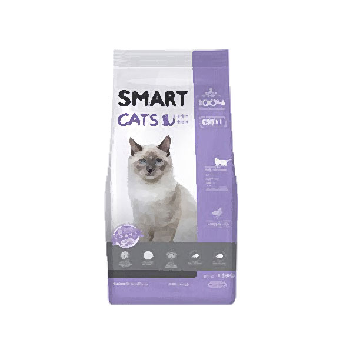
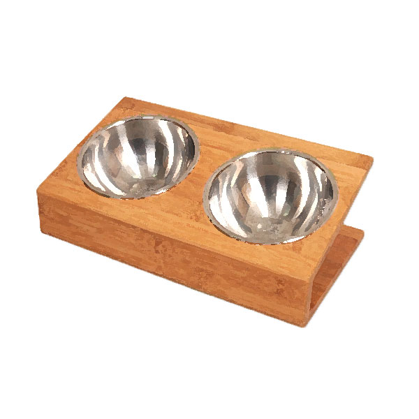
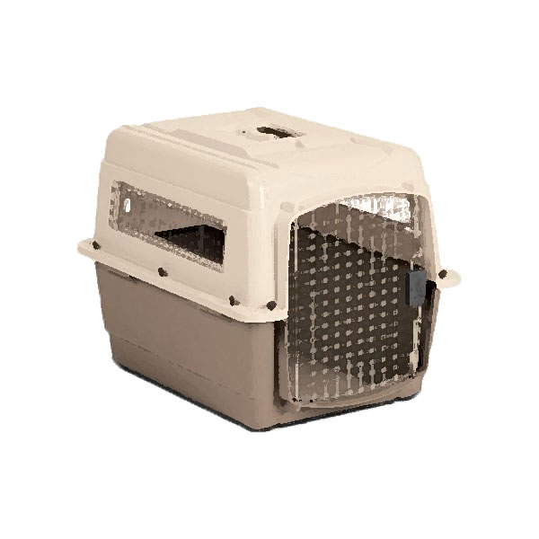
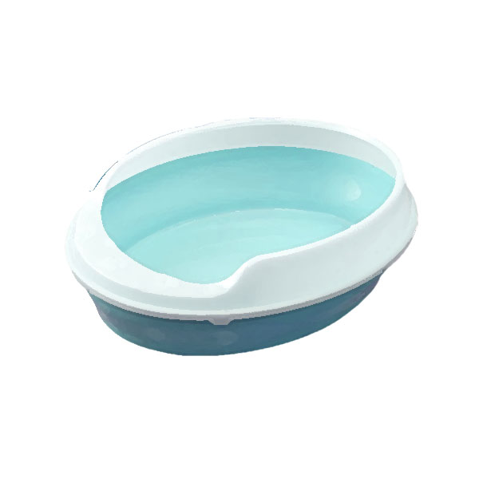
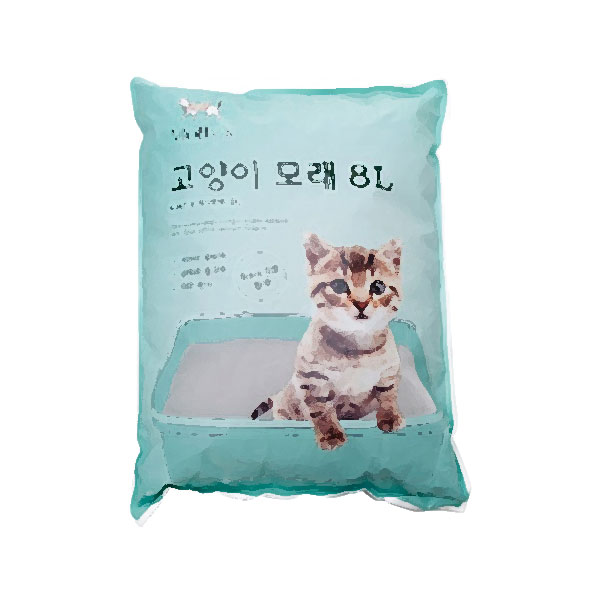
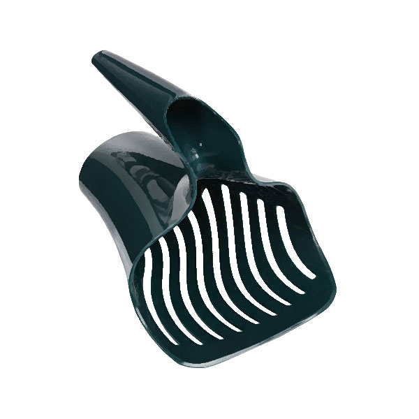
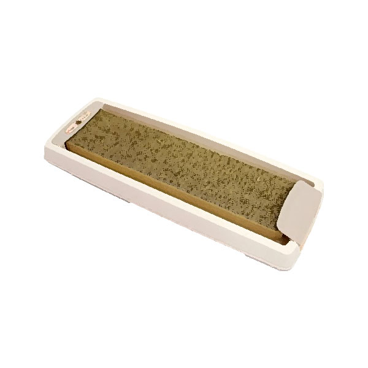
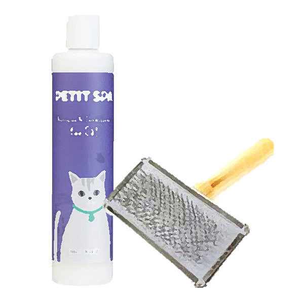

고양이를 키우기 위해서는 기본적으로 갖춰두어야 하는 물품들이 여러 개 있습니다.
|  |  |  |  |
| 사료 | 식기 | 이동장 | 배변용 화장실 |
|  |  |  |  |
| 배변용 모래 | 화장실 전용 주걱 | 발톱긁개 | 미용용품 |
특히 사료는 고양이 전용 사료이어야 하고, 고양이의 나이에 따라 줄 수 있는 사료가 다릅니다.
생후 12개월 이하는 새끼 고양이용 사료를 1살 이상은 어른 고양이용 사료를 7살 이상은 나이든 고양이용 사료를 주어야 합니다.
미용용품에는 고양이의 털을 빗겨줄 빗과 고양이 전용 혹은 애완동물 전용 발톱깎이, 고양이 전용 샴푸가 필요합니다.